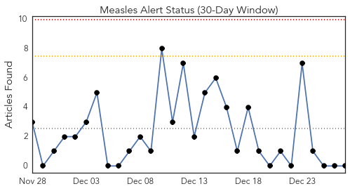
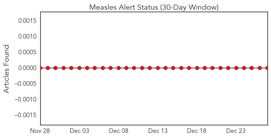
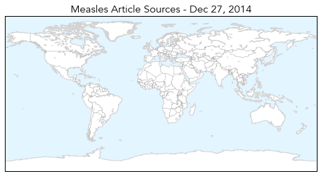
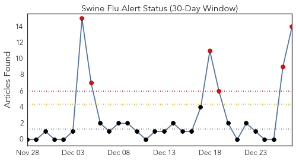
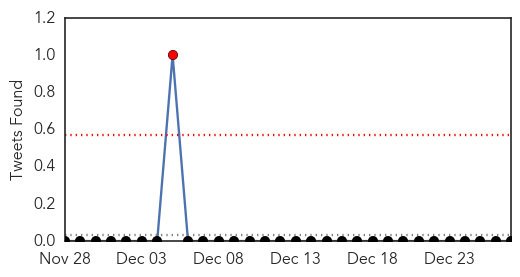
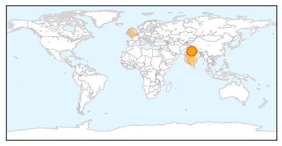
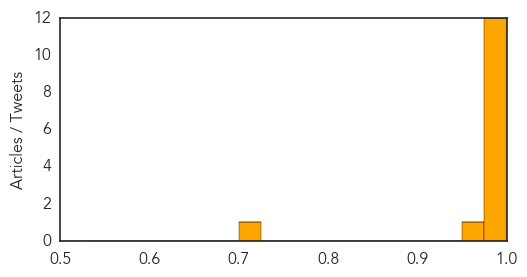

Measles
30-Day Web Trend
0 alerts, 0 warnings

30-Day Twitter Trend
0 alerts, 0 warnings

Article Locations
Article Confidences

Top Articles:
-
No articles found for Dec 27, 2014
Top Tweets:
-
No tweets found for Dec 27, 2014
Swine Flu
30-Day Web Trend
6 alerts, 0 warnings

30-Day Twitter Trend
1 alerts, 0 warnings

Article Locations
Article Confidences
Top Articles:
- 0.999
- A Woman Dies From Swine Flu After A Few Days Of Infection
- 0.998
- Delhi hospitals on alert after first swine flu death
- 0.997
- Delhi hospitals put on alert following swine flu death
- 0.996
- Delhi hospitals put on alert following swine flu death
- 0.991
- Swine flu death: Nadda says no need to panic
- 0.991
- Swine flu death: Nadda says no need to panic
- 0.991
- Swine flu death: Nadda says no need to panic
- 0.989
- Swine flu death: Nadda says no need to panic
- 0.988
- Four fold surge in flu cases will tip the NHS over the edge, medics warn
- 0.987
- Six swine flu cases in Hyderabad
- 0.987
- Nadda says no need to panic , AniNews.in
- 0.976
- How to Protect Yourself From Swine Flu
- 0.961
- Hospitals on alert after suspected swine flu death
- 0.703
- Centre to issue guidelines asking airlines and airports to maintain hygiene : India, News
Top Tweets:
-
No tweets found for Dec 27, 2014